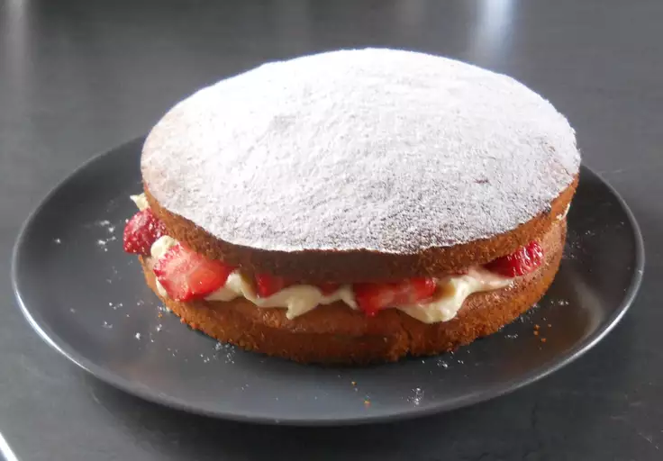

Victoria Sandwich Cake

Description
Victoria sponge cake, a much loved English layer cake, is perfect for any occasion!
Ingredients
- 160g flour
- 2 level tsp. baking powder
- 120g margarine
- 120g caster sugar
- 2 large eggs
- 2-3 drops vanilla essence
- cold water to mix
- 2 tblsp. smooth jam
Steps
- Preheat oven to 375°F (190°C). Grease 2 sandwich cake tins with oil or unsalted fat and dredge with a little flour.
- Cream margarine and sugar with essence.
- Sieve flour and baking powder together onto a plate.
- Lightly beat eggs in a small basin.
- Add egg gradually to the creamed mixture, beating well between each addition (a little flour may be added to prevent curdling).
- When all the egg has been added, cease beating and fold in the remainder of the flour a little at a time. Add cold water to keep mixture of dropping consistency.
- Divide mixture equally between the two tins and spread lightly.
- Bake 30–40 minutes. When cooked, the cakes should be well risen, golden brown, and slightly shrunken from sides of tins.
- Cakes should respond to the fingertip test.
- Allow cakes to cool completely on a cooling rack, and then sandwich the two together with the jam. Dredge the top with fine sugar.
Variations
For Chocolate Sandwich Cake , mix 2 level tblsp. cocoa with 2 tblsp. boiling water and add to mixture. Sandwich together with butter cream.